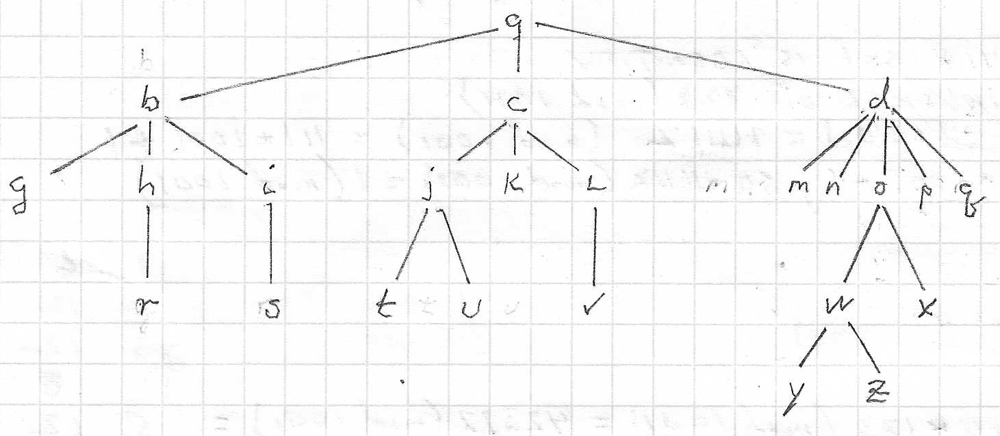

Total Points = 118

| a. | (2 points) Which vertex is the root? |
| b. | 4 points) Which vertices are internal? |
| c. | (4 points) Which vertices are leaves? |
| d. | (2 points) Which vertices are children of o? |
| e. | (2 points) Which vertex is the parent of k? |
| f. | (2 points) Which vertices are siblings of i? |
| g. | (2 points) Which vertices are ancestors of v? |
| h. | (2 points)Which vertices are descendants of c? |
| i. | (2 points) What is the depth of the tree? |
| j. | (2 points) What is the breadth of the tree? |
| a. | (8 points) Construct the binary tree with prefix codes representing the coding scheme above. |
| b. | (4 points) Find the word represented by 100011010000101. |
| a. | (14 points) Construct a Huffman code for these symbols. For consistency always put the lesser quantity on the left and assign it a 0, so the greater quantity goes on the right and is assigned a 1. |
| b. | (8 points) Calculate the average number of bits required to encode text using the Huffman code for the seven original symbols in (a). |
| c. | (2 points) How may bits are required to send the Huffman-encoded string: NATION? How many bits are required to send this string using 8-bits per ASCII character? |
| a. | Represent the expression in a binary tree. |
| b. | Give the corresponding prefix notation. |
| c. | Give the corresponding postfix notation. |
| d. | Show the infix evaluation for x = 1 and y = –2. |
| e. | Show the prefix evaluation for x = 1 and y = –2. |
| f. | Show the postfix evaluation for x = 1 and y = –2. |
Solutions to Homework on Trees
(to be posted after the due date)